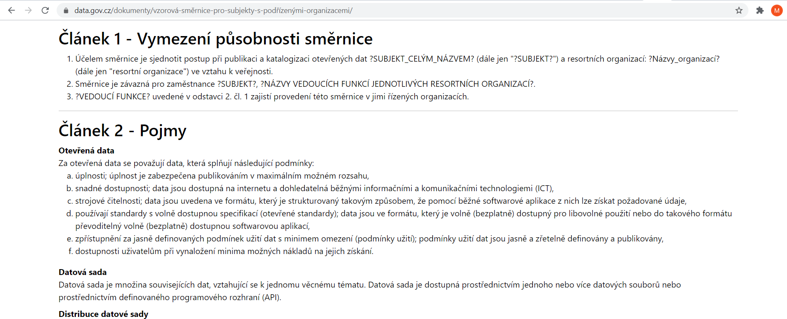

Interní legislativa v oblasti otevřených dat
V tomto modulu získáme přehled o tématu interní legislativy v
oblasti otevřených dat.
Publikace otevřených dat by měla být v
organizaci upravena formou směrnic, nařízení a jiných interních
předpisů. Nemusí existovat pouze jedna interní směrnice,
ale může existovat celý soubor interních aktů.
V tomto modulu předpokládáme
vytvoření jedné interní směrnice publikace a katalogizace
otevřených dat.
Proč se zabývat interní legislativou v oblasti otevřených dat?
Publikaci otevřených dat nelze
považovat za jednorázovou akci.
Otevírání dat je proces, který musí
fungovat dlouhodobě a musí být opřený o jasná pravidla,
která budou zakotvena právě v interní směrnici.
Otevírání dat bez interní směrnice?
V případě, že se otevírání dat realizuje bez předem připravené interní
směrnice, stává se, že:
- otevírání dat probíhá nekoncepčně,
- zaměstnanci realizující činnosti v oblasti otevírání dat si zasahují do
kompetencí,
- není zřejmé, kdo má za který krok/výsledek odpovědnost,
- není zajištěné dlouhodobé fungování poskytování otevřených dat
- nejsou pravidelně aktualizovány již publikované datové sady,
- nejsou publikovány nové datové sady,
- …
Jaké jsou přínosy dobře připravené interní směrnice?
Díky interní směrnici proběhne proces otevírání dat koordinovaně.
- Celý proces otevírání dat je díky
interní směrnici transparentní, jednotlivé činnosti na sebe
navazují,
- minimalizuje se riziko sporů o
kompetencích, minimalizuje se rovněž riziko duplicitní práce,
- jsou zřejmé odpovědnosti za jednotlivé
kroky procesu otevírání dat.
Tvorba interní směrnice v rámci procesu otevírání dat
Interní směrnice musí zajistit Vedení organizace, které tuto
činnost nejčastěji deleguje na Koordinátora otevírání
dat.
Tvorba interní směrnice či
koordinace její tvorby je tedy typicky úkolem
Koordinátora otevírání dat.
Návrh interní směrnice předá
Koordinátor otevírání dat Vedení poskytovatele dat ke
schválení.
Detail relevantní části procesu

Jaké oblasti by měla směrnice pokrývat?
- Přehled rolí a jejich obsazení,
- práva a povinnosti jednotlivých rolí,
- postup publikace a katalogizace
otevřených dat,
- katalog(y) otevřených dat Subjektu,
příp. způsob registrace datových sad v Národním katalogu
otevřených dat.
Není třeba se ničeho obávat: v případě
malých organizací může být směrnice opravdu stručná.
Jsou k dispozici vzorové směrnice, které lze použít jako podklad
pro tvorbu nové směrnice?
Ano, jsou na Portálu o datech pro
několik hlavních typů institucí veřejné správy:
Prohlédněte si je!
